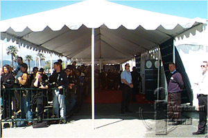
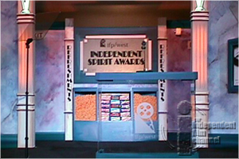
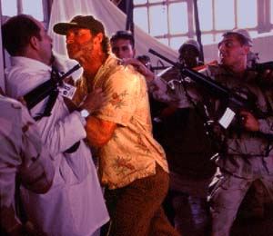
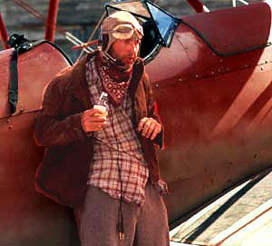
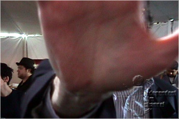

| We stumbled over this unused script for Randy Quaid and Vicki Lewis from
the 1999 Independent Spirit Awards. Don't you wish they'd performed it?
|
BEST FIRST SCREENPLAY
RANDY QUAID AND VICKI
LEWIS ENTER. RANDY LOOKS LIKE HE JUST DOESN'T GIVE A SHIT
ABOUT BEING HERE.
RANDY QUAID
(unenthused)
Well, I guess it's great to be here at the Independent
Spirit Awards.
VICKI LEWIS
(sincere)
Yeah, it is. It's an honor.
RANDY QUAID
Yeah, whatever. So what award are we giving out here? What
is, best dolly shot, best donut...
VICKI LEWIS
It's Best First Screenplay and then Best First Feature.
These are important awards.
RANDY QUAID
Yeah, whatever, so the nominees for the first one are what,
Darren somebody--
(squints at teleprompter)
|

|
|

|
VICKI LEWIS
--Hey, Randy, I've gotta call you on this one. You're
copping major attitude here. What's the deal?
RANDY QUAID
I don't know, I guess I'm just not that excited about
independent film anymore, because I've finally figured out
what "independent" means: It means you don't make any money.
I just did this film for Miramax, which means I'm working
for The Walt Disney Company, but because it's the Oscar wing
of the Walt Disney Company I'm supposed to work for scale.
This independent thing--it's just a scam. I know a scam when
I smell one. I mean, if it walks like Donald Duck and it
quacks like Donald Duck, it's probably Harvey Weinstein
asking you to take a cut in pay. You think Harvey's taking a
cut in pay?
VICKI LEWIS
Randy--are you sure you want to be saying this?
RANDY QUAID
Oh, come on, like you know anything about this. You think
just because you were in INDEPENDENCE DAY that makes you an
independent?
VICKI LEWIS
Actually, I was in GODZILLA.
RANDY QUAID
Whatever.
VICKI LEWIS
And you were in INDEPENDENCE DAY.
|
|
RANDY QUAID
Yeah, and I got paid. Because
that was 20th Century Fox, not this Fox Searchlight
operation, which I suspect is really just Fox searching for
a way not to pay you. Just like Sony Pictures Classics,
which is just Sony's Classic Scam. And don't get me started
on October films--do you know that when they hire you to do
a movie you're supposed to pretend you're not dealing with
Universal Pictures? They want you to act like it's some
little Mom & Pop operation. "Oh, we don't have any
money, we're just a poor little independent company."
Doesn't anyone see this? The corporations are taking over
independent film, people, and their only agenda is to screw
over the artists and make a truckload of money! We shouldn't
be having an awards ceremony for independent film. We should
be having a funeral for
independent film!
|


|
|

|
VICKI LEWIS
So, Randy, you know, I'm not disagreeing with you here, but
we're about to welcome a first-time writer into the
independent fold. Could we maybe be a bit more positive?
RANDY QUAID
Oh. Yeah, sure. I'm an actor. I can do positive. What do you
want to say?
VICKI LEWIS
I want to say that the nominees in this category are really
good. Their films really do show an independent vision. And
we should encourage them to keep writing such intelligent,
challenging cinema.
RANDY QUAID
You're right. We should do that. Just watch your back, kids.
VICKI LEWIS
All right, here we go. The nominees for Best First
Screenplay are...
|
|
|
|
Bonus photo

John Pierson at the Independent
Spirit Awards
|